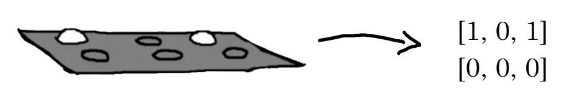
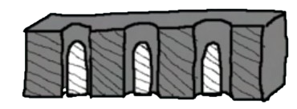
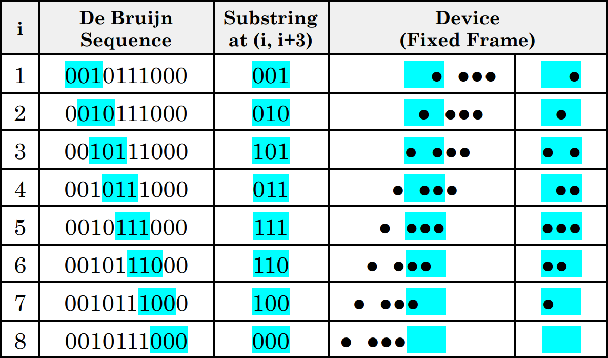
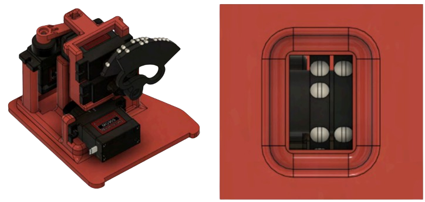

Modular, Refreshable Braille Display
The motivation of this project is reducing the cost and improving the actuation efficiency/complexity of refreshable braille displays, which are currently in the thousand to ten-thousand dollar range. Generally, every dot on every braille cell is individually actuated, which I find an inefficient solution. The maintenance costs are also extremely high for current devices.
I aim to streamline that with new mechanisms, in order to decrease cost, increase reliability, and improve overall ease-of-use for users and educators.
I’ve created a method for actuating multiple dots at once, in a very efficient way! You will see in subsection 3.2 that it decreases the price of braille displays by hundreds, possibly thousands of dollars. To understand how the solution works, realize: the up/down of a braille dot can be represented with the 0/1 of binary.
Take a braille cell, with 6 dots. We’ll assume that it is horizontal: there are 2 rows, and 3 columns, represented by a 2x3 array.

Figure 1: Example 2x3 braille cell and corresponding array
Now, take one row, [x, x, x], and represent this as a string “xxx”. We will refer to this as the row string.

Figure 2: All dots are down, so [0, 0, 0] -> “000”
There are 3 dots (n = 3), and each can be up or down (k = 2), meaning there are 8 possible combinations. Therefore, there exists 8 possible row strings: “000”, “001”, “010”, and so on.
A key can be inserted into the row: moving some dots up and leaving some alone, like the pins inside a lock. If the key is much longer than the row, you’ll get different results depending on how far you insert it before turning.
Figure 3: Key “10111000” inserted 3 places in before turning
Keys with every combination on them “000” + “001” + “010”... = “000001010…” would work to produce all the combinations, but they’d be 24 characters long. There exists a more efficient solution. As shown in Figure 1.3, an extremely short key (“10111000”, length of 8) actually allows for every combination. It actually boils down to an algorithmic problem.
Inserting a key i characters before turning is the same as looking at the (i, i+3) substring of the key. Our goal is to get every possible sequence of three up-down dots as a substring somewhere in the key string. A De Bruijn Sequence is the shortest string containing every possible combination of n characters in the size-k alphabet as a substring, exactly once.
Here, k is 2 (the alphabet size is 2, since it is binary), and the length n is 3. The table in Figure 1.4 shows this.

Figure 4: De Bruijn Sequence (k = 2, n = 3)
Note: All 0s are mechanically represented by nothing. This is why the strings in the “De Bruijn Sequence” column of Figure 1.4 are 10 long instead of 8: the first two characters (both 0) don’t really exist, just like all the other 0s; they’re just there for illustration. The De Bruijn Sequence is also cyclic, which you may have realized if you tried checking for all 8 substrings in “10111000”.
3.1
Modular, 3D Printed Device
Everything is designed and modeled in Fusion 360 and 3D printed. Rigid parts use PLA while softer materials (such as the actual braille dots themselves) are printed with TPU for comfort & compliance.

Figure 5: CAD for one of my prototypes using the De Bruijn Sequence for (k = 2, n = 4)
It is completely modular and fastens together only using press-fits, so after the 6-7 steps to assemble one cell, you can repeat the process for as many as you want and continue to attach them together.
This allows schools to choose how they want to use the device and allows for easier troubleshooting/replacement of parts. Current braille displays (yes, the $10000 ones) are notorious for having horrible maintenance costs. And of course, they do: hundreds of tiny fragile individually-actuated dots are being touched and pressed and torqued constantly. Reducing the number of parts doesn’t just make it cheaper to manufacture but cheaper to repair, harder to break, and easier to fix.
3.2
Cost, Functionality, and Code
Since there are only 2 MG90 servos per cell, the device is extremely cheap and very small. There are only two other parts: the 3D printed pieces and the microcontroller. I currently use an ATmega32U4 board (Arduino Pro Micro) due to its small size.
Cost per cell: ($1.90/servo x 2 sides) + $0.13/prints = $2.03
Cost in total: ($2.03/cell x 4 cells) + $7.00/microcontroller = $15.02
However, compared to the Focus 14, which is an “industry standard” for braille displays, my 4 cells are still limited. This is what 14 would cost with my device:
Cost overall: ($2.03/cell x 14 cells) + $40.00/electronics = $68.02
Assuming that 14 servos requires a bigger microcontroller with more IO pins + a different power source/shield (though this is a very low torque application so you can still do this on cheap microcontrollers with I2C and cycle through them quickly). But that's not all that the Focus 14 does! Let’s add the rest: a Bluetooth module ($16), 9 keyboard switches ($3: splurging on very nice Akko Jelly Black switches), 12 push buttons ($15: this gets you a box of 240 for some variety), and a USB-C breakout ($5). That’s all the main functionality, but let's throw in $50 so we can order a custom PCB, whatever other electronics we need, and a whole kilogram of 3D-printing filament (I’ve bought all of these for other projects, which is where the numbers come from–everything is heavily rounded up). Another $50 on top just in case.
That’s a lot! How much could the Focus 14 cost? Maybe $300 because they have extra parts like rubber feet? $500 because they have a metal housing?
If it seems like I’m misrepresenting the situation: the software isn’t included and must be purchased separately, the manual also needs to be purchased (and is somehow out-of-stock?), the leather carrying case they sell for these displays is over $100, and they only include a 2-year warranty… for a target market of people with a permanent condition.
Thanks to the simplicity of the De Bruijn Sequence and the simple components required, the electronics and code in this project are far, far simpler than the mechanisms and ideas, so I will not waste space here with too many details.
Currently, it takes English input through a GUI and converts it to rotation angles for the servos in a 2-D array. Then it rotates the servos to those angles, displaying the text. This is what educators at Morris Knolls, the high school I’m working with, have asked for: a simple way for sighted-supervisors to write words out in braille without needing to use complex, outdated, or expensive tools. I’m working on additional functionality for the device such as control systems (keyboards + other inputs) so that users can interact with technology.
This shows the principles of the current functionality:
In reality, I don’t need braille anywhere in the code. I simply convert characters directly to rotation angles, as it requires very little memory to store the character-angle conversion directly. However, the code shown above could still work because this situation is not bottlenecked by computational efficiency or servo rotation speed, but rather human reaction time.
3.3
Additional Documentation